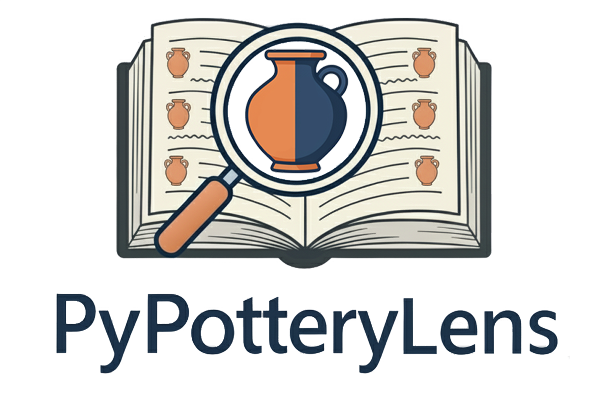
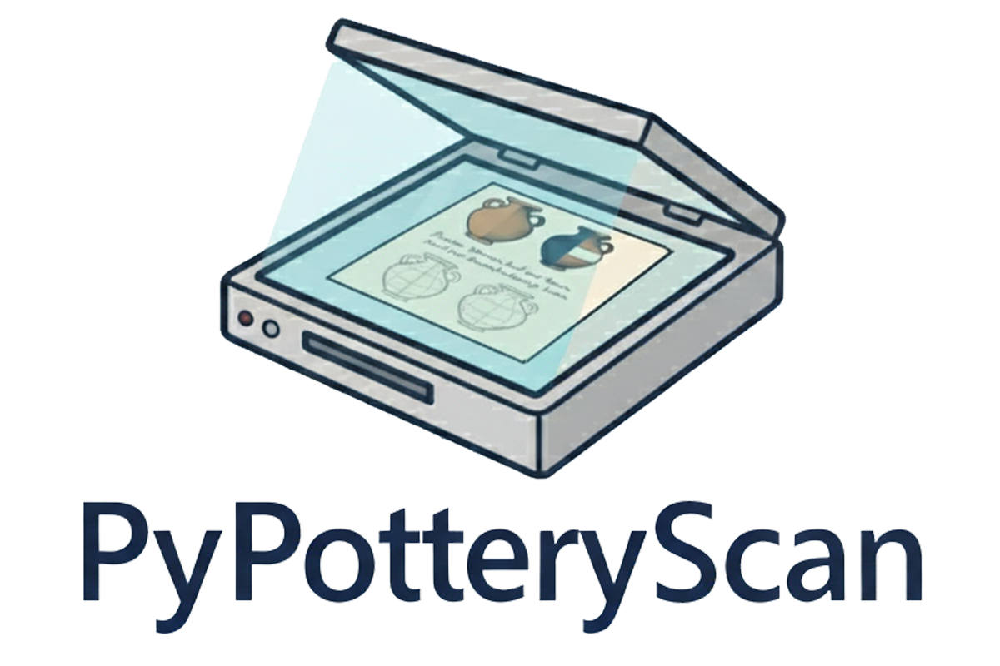
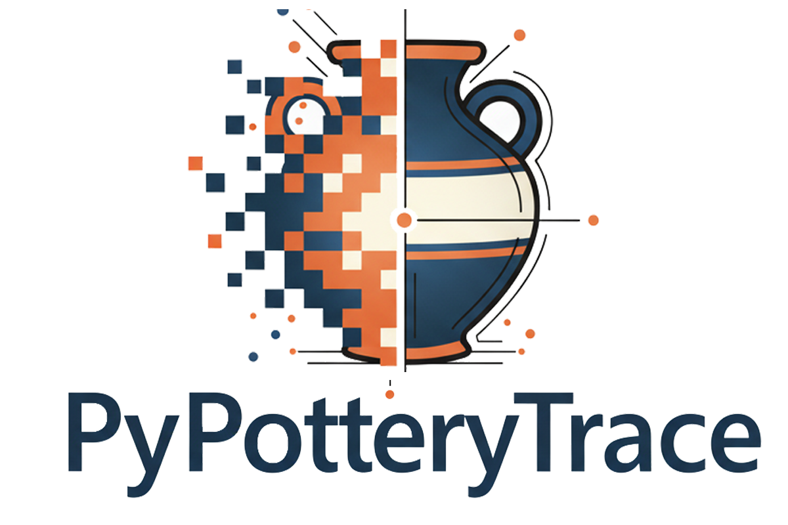

Document Pottery in Minutes, Not Months
An open-source desktop suite for archaeologists, researchers, and ceramic illustrators. From extracting vessel drawings in legacy PDF reports to digital inking, interactive contour vectorization, and publication-ready plate synthesis.
PyPottery Suite Launcher
Desktop application for archaeological ceramic documentation
Five Steps from Archive to Publication
Each tool solves a dedicated stage of ceramic documentation. Run them individually as standalone tools or orchestrated through the PyPottery Suite Launcher.

PyPotteryLens
Archive Mining & PDF ExtractionMines historical archaeological reports and PDF monographs. Uses deep learning (YOLOv8) to automatically detect, isolate, and catalog pottery vessel illustrations directly from multi-page documents.

PyPotteryScan
Plate Digitization & OCRSpecialized tool for processing scanned multi-sherd drawing plates. Automatically segments drawing boundaries, extracts handwritten labels and stratigraphic context codes using OCR, and exports structured tables.

PyPotteryInk
AI Inking & Diffusion EngineTransforms hand-drawn technical illustrations into publication-grade vectorized drawings in seconds, powered by a custom diffusion model tailored for archaeological illustration conventions.

PyPotteryTrace
SAM 2 Interactive VectorizationInteractive AI-powered vectorization tool for pottery drawings. Leverages Segment Anything 2 (SAM 2) for rapid sherd profile tracing, rim diameter curvature matching, and clean vector SVG export.

PyPotteryLayout
Publication Plate SynthesisComposes standardized publication plates. Automatically arranges ceramic illustrations with consistent metric scale bars, rim orientation rules, typological labels, and standardized print margins.
The PyPottery Suite Desktop Launcher
Launch, configure, and manage all five tools with zero command-line friction. Designed specifically for archaeologists and research teams.
One Control Center for Every Tool
The PyPottery Launcher coordinates all documentation modules from a single offline desktop interface. It monitors hardware, downloads, neural network weights, and manages an isolated Python execution environment.
Unpublished excavation drawings and sensitive site data stay on your workstation. Optional cloud LLM assistance via OpenRouter is there if you want it, never required.
Automatically configures PyTorch for NVIDIA CUDA, Apple Silicon MPS, or multithreaded CPU.
Large AI model checkpoints are stored in a centralized cache.
Compiled installers let you download, install, and start working right away.
Publications
Would you like to find out more about the technical details, including the experiments that have been carried out?
PyPotteryLens: An Open-Source Framework for Automated Pottery Digitisation
PyPotteryInk: A One-Step Diffusion Model for Archaeological Drawing Vectorization
Frontier AI, in Service of Archaeology
Not generic image filters: every stage runs on new and exciting techniques, adapted specifically for archaeological drawing conventions rather than repurposed off the shelf.
Detects and segments individual vessel drawings straight off monograph plates and scans. No more manual cropping.
Reads handwritten notes and stratigraphic codes off decades-old inventory cards, then structures the result into clean, queryable tables.
A custom diffusion architecture, trained on archaeological line-weight conventions, turns a pencil sketch into publication-grade ink in seconds. Not hours on vector graphics software.
Meta's interactive segmentation model, repurposed for vessel profiles: click a rim or a break line and get back an editable, smoothed Bézier curve.
For metadata tasks that benefit from a larger model, you can opt into cloud inference. Never required, but extremely useful .
Building from Source or Contributing?
All PyPottery tools are open source under the Apache 2.0 License. You can clone the repository to run standalone command-line scripts, inspect the neural architectures, or contribute improvements.
git clone https://github.com/lrncrd/PyPottery.git